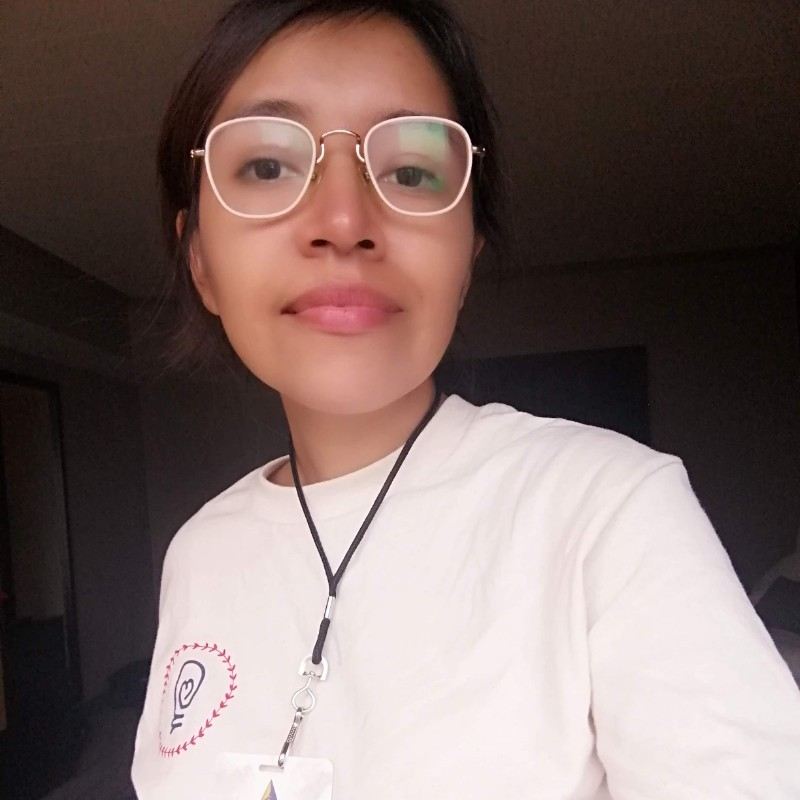
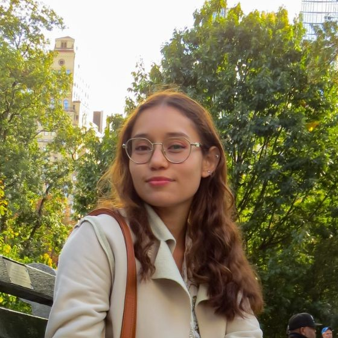

Sobre nosotros
AI Safety Mexico es una organización académica dedicada a promover la investigación, educación y políticas sobre la seguridad y alineación de la inteligencia artificial en México. Nuestra misión es fomentar la colaboración entre investigadores, desarrolladores, y responsables políticos para garantizar que los sistemas de IA se desarrollen de forma segura y beneficiosa para toda la sociedad mexicana.
Actividades Pasadas


Actividades en curso
Actualmente estamos trabajando en las siguientes iniciativas:
- Mesas de trabajo primer viernes del mes
Programas educativos y colaboraciones
Curso de Fundamentos de Seguridad en IA y Gobernanza en IA
Se han realizado cursos gratuitos para la comunidad basados en el material de AI Safety Fundamentals de BlueDot Impact, ARENA, AI Safety Collab y AI Safety Atlas. Jason Pinelo, Angel Tenorio, Janeth Valdivia, Isabel Cámara y Karime Pacheco fungieron como facilitadores de estos programas, que introducen los conceptos fundamentales de seguridad y gobernanza en inteligencia artificial.


Curso Técnico de Seguridad en IA
Curso sobre aspectos técnicos de seguridad en IA, con sesiones intensivas basadas en los materiales de ARENA. Este curso profundiza en los aspectos técnicos de la seguridad en sistemas de IA. Jason Pinelo y Angel Tenorio fungen como facilitadores de este programa.
Seguridad en IA para Instituciones
Se han impartido cursos especializados sobre seguridad en IA en el Centro de Investigación Geoestadística, a cargo de Angel Tenorio y Silvia Fernández. También se llevó a cabo un curso en la Facultad de Matemáticas de la UADY, dirigido por Silvia Fernández, Angel Tenorio y Jason Pinelo.


VIGÍA: Plataforma para el análisis de gobernanza de IA y soberanía digital en México
VIGÍA (Valoración de Impactos Gubernamentales de Inteligencia Artificial) es una plataforma en desarrollo que surge como parte de los proyectos del curso de AI Governance, en colaboración con ENAIS. El proyecto recibió un Special Recognition en la AI Safety Collab 2025 Summer Action Competition por su propuesta de infraestructura regional para el análisis de políticas públicas relacionadas con inteligencia artificial.
El equipo detrás del proyecto está conformado por: Pilar Carolina Moncada Santana, Jason Maximiliano Pinelo Hau, Axel Alexander Pinelo Hau, Janeth Valdivia y Angel Tenorio.
SPAR – AI Safety Connect
Integrantes de AI Safety México, Jason Pinelo, Dexter Gómez y Janeth Valdivia, tuvieron la oportunidad de participar en el Supervised Program for Alignment Research (SPAR), un programa de investigación que conecta a talento emergente con especialistas para abordar los riesgos asociados al desarrollo de la inteligencia artificial.
Como equipo mexicano trabajamos en el proyecto AI Safety Connect, el cual pretende minimizar la brecha estructural de coordinación entre la investigación académica y las comunidades de seguridad en inteligencia artificial mediante la construcción de una plataforma integrada que mapea de forma sistemática autores, publicaciones y áreas temáticas relevantes para la seguridad de la IA por medio de una taxonomía estructurada, búsqueda semántica y pipelines de datos escalables.
La colaboración en este proyecto refleja un compromiso con enfoques basados en evidencia, el desarrollo responsable de la inteligencia artificial y el fortalecimiento de la infraestructura de investigación en AI Safety.
Agradecemos a SPAR Research, a Jaime Raldua Veuthey y a todas las personas comprometidas que hicieron posible la colaboración en este proyecto: Julius A. Odai, Ihor Kendiukhov, Tim Sankara, Jakub K. Nowak y Kailer Laino.

Investigación
Nuestro equipo participa activamente en proyectos de investigación orientados a la seguridad en inteligencia artificial:
Evaluación de Seguridad en Modelos de IA
Miguel Angel Peñaloza está trabajando en construir evaluaciones para medir el comportamiento de los modelos en cuanto a seguridad. Este proyecto busca desarrollar métricas y herramientas para la evaluación sistemática de riesgos en sistemas de IA.
AI Safety in Mexico: A Pilot Survey in Yucatan
Desarrollo Profesional: ML4Good
Angel Tenorio, Max Pinelo, Isabel Cámara y Janeth Valdivia asistieron al campamento ML4Good para incrementar sus conocimientos en seguridad de inteligencia artificial y aplicar estos conocimientos en sus investigaciones y actividades educativas.
Participación en EAGxCDMX
En el marco de la conferencia Effective Altruism Global X Ciudad de México (EAGxCDMX), Silvia Fernández, Angel Tenorio y Jason Pinelo impartieron el taller "Not so speedy AI Safety", evento diseñado para establecer vínculos colaborativos con especialistas del área y difundir el trabajo desarrollado en México sobre seguridad en inteligencia artificial a la comunidad internacional.
Equipo
Nuestro equipo está formado por profesionales dedicados a la seguridad en inteligencia artificial desde diferentes perspectivas y áreas de especialización:


Advisors
Contamos con el acompañamiento de advisors que brindan orientación estratégica y académica a AI Safety Mexico.
Contacto
Para obtener más información sobre nuestros programas, investigaciones o para colaborar con nosotros, puede contactarnos a través de:
Correo electrónico: contact@aismx.org